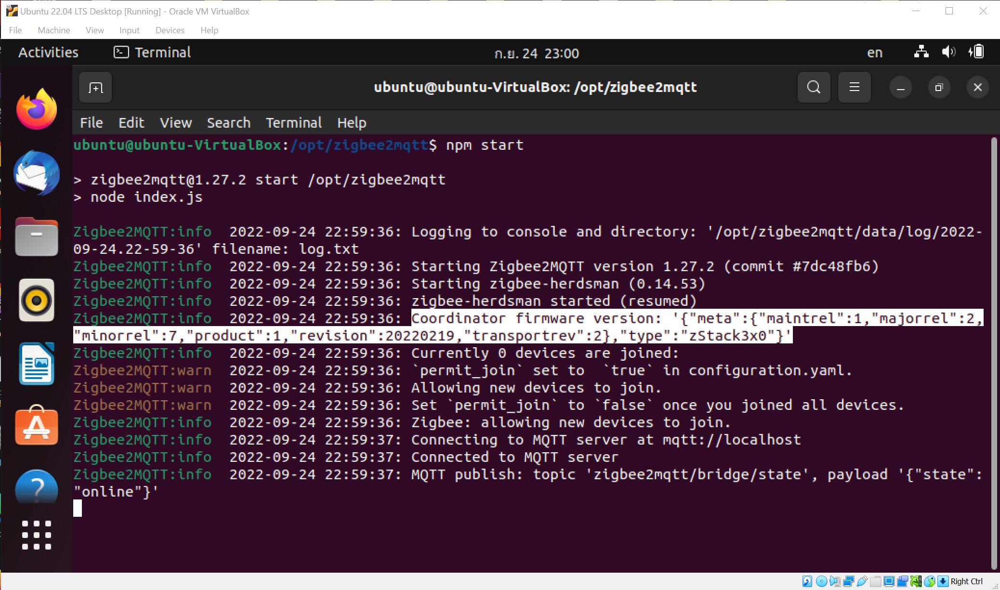

การติดตั้ง Zigbee2MQTT สำหรับ Linux และใช้งานในเบื้องต้น#
▷ Zigbee2MQTT#
ซอฟต์แวร์ประเภท Open Source ที่เป็นแพลตฟอร์มสำหรับการใช้งาน Smart Home มีอยู่หลายตัวเลือก เช่น Home Assistant, openHAB, Domoticz และ ioBroker เป็นต้น บทความนี้กล่าวถึง Zigbee2MQTT ซึ่งเป็นซอฟต์แวร์ที่สามารถนำมาใช้ในการพัฒนาแพลตฟอร์มสำหรับ Smart Home ได้เช่นกัน
Zigbee2MQTT ใช้ Nodejs (JavaScript Runtime Engine) ในการทำงาน มีความสามารถเชื่อมต่อกับอุปกรณ์ประเภท ZigBee Coordinator - USB Adapter / Dongle ผ่านทางพอร์ต USB-to-Serial ทำให้เครื่องคอมพิวเตอร์สามารถสื่อสารข้อมูลกับอุปกรณ์อื่นในเครือข่ายไร้สายด้วยโพรโทคอล IEEE 802.15.4 / ZigBee 3.0 และสามารถเชื่อมต่อกับ MQTT Broker ได้ด้วย หรือกล่าวได้ว่า Zigbee2MQTT ทำหน้าที่เป็นเกตเวย์ (Gateway) ที่เชื่อมต่อระหว่างเครือข่ายไร้สาย ZigBee กับ MQTT Broker
รูป: การใช้งานโพรโทคอล ZigBee สำหรับ Smart Home (Source: Connectivity Standards Alliance)
Zigbee2MQTT สามารถนำไปติดตั้งใช้งานได้กับคอมพิวเตอร์บอร์ดเดี่ยว (Single-Board Computer: SBC) เช่น บอร์ด Raspberry Pi ที่ทำงานด้วยระบบปฏิบัติการ Linux เช่น Raspberry Pi OS และ Ubuntu หรือจะทดลองใช้งานกับคอมพิวเตอร์ทั่วไปที่ใช้ Windows หรือ macOS ก็ได้เช่นกัน
ลองดูรายการอุปกรณ์ ZigBee End Devices ที่สามารถนำมาใช้ร่วมกับ Zigbee2MQTT ได้ ในปัจจุบันมีมากกว่า 2000 รายการ จากหลายผู้ผลิต เช่น โมดูลเซนเซอร์ประเภทต่าง ๆ สวิตซ์ไฟฟ้า หลอดไฟ LED ปลั้กไฟฟ้าที่ควบคุมการทำงานได้ เป็นต้น
▷ ZigBee USB Adapters#
อุปกรณ์ ZigBee USB Adapters ที่ใช้งานได้กับ Zigbee2MQTT ส่วนใหญ่จะใช้ชิปของบริษัท Texas Instruments (TI) หรือชิปของบริษัท Silicon Labs ก็เป็นอีกตัวเลือกหนึ่ง เช่น
- TI CC2530 และ CC2531 — ชิปรุ่นเก่า ทั้งสองรุ่นใช้ซีพียู 8 บิต (8051 Core) ทำงานอยู่ภายใน CC2531 มีความแตกต่างจาก CC2530 ตรงที่ความสามารถในการใช้งาน USB อย่างไรก็ตาม ก็ไม่แนะนำให้เลือกใช้ชิปทั้งสองสำหรับการใช้งานในอนาคต หรือใช้กับเครือข่าย ZigBee ที่มีขนาดใหญ่ (มีอุปกรณ์เชื่อมต่อจำนวนมาก)
- TI CC2538 (Arm Cortex-M3), CC1352R (Arm Cortex-M4F) และ CC2652R / CC2652P (Arm Cortex-M4F) — ชิปรุ่นใหม่กว่า ใช้ซีพียู 32 บิต เหมาะสำหรับการใช้งานโพรโทคอล ZigBee 3.0 แต่มีราคาอุปกรณ์แพงกว่ารุ่นเก่า
- Silicon Labs EFR32MG1x / MGM1x (Series 1) และ EFR32MG2x / MGM21x (Series 2) — ชิปทั้งสองรุ่นใช้ซีพียู 32 บิต ตระกูล ARM Cortex-M4F และ ARM Cortex-M33 ตามลำดับ
ตัวอย่างอุปกรณ์ ZigBee USB Adapters (ดูรายการอุปกรณ์: Zigbee2MQTT Supported Adapters) เช่น
- Itead CC2531 USB Dongle
- Itead / Sonoff Zigbee 3.0 USB Dongles
ซึ่งมีสายอากาศภายนอก (External Antenna) และกล่องใส่ที่ทำมาจากอะลูมิเนียม (Metal Case)
- "ZBDongle-P" (CC2652P) ใช้เฟิร์มแวร์ Z-Stack (ZNP) 3.x.0 Coordinator Firmware
- "ZBDongle-E" (EFR32MG21) ใช้เฟิร์มแวร์ Silicon Labs EmberZNet Application Firmware / EmberZNet Serial Protocol (EZSP)
- ZB-GW04 V1.1 ZigBee 3.0 USB Dongle (EFR32MG21) ทำงานได้เหมือน "ZBDongle-E" (EFR32MG21) แต่อาจไม่มีสายอากาศภายนอก และมีกล่องพลาสติก
รูป: อุปกรณ์ CC2531 USB Dongle
รูป: อุปกรณ์ Itead / Sonoff Zigbee 3.0 USB Dongle Plus (CC2652P) และสายอากาศภายนอก
รูป: ภายในอุปกรณ์ Itead / Sonoff Zigbee 3.0 USB Dongle-P (Source: Itead / Sonoff)
รูป: ภายในอุปกรณ์ Itead / Sonoff Zigbee 3.0 USB Dongle-E (Source: Itead / Sonoff)
ตาราง: เปรียบเทียบความแตกต่างของอุปกรณ์ ZBDongle-P และ ZBDongle-E

รูป: อุปกรณ์ ZB-GW04 ZigBee USB Dongle (ไม่ใส่กล่องพลาสติก)
วิธีการติดตั้งหรืออัปเกรดเฟิร์มแวร์และอุปกรณ์ที่เกี่ยวข้องได้ ศึกษาได้จากบทความต่อไปนี้
- "การติดตั้งเฟิร์มแวร์ ZigBee Coordinator สำหรับอุปกรณ์ CC2531"
- "การติดตั้งเฟิร์มแวร์ ZigBee Coordinator สำหรับอุปกรณ์ CC2530"
- "การติดตั้งเฟิร์มแวร์ ZigBee Coordinator สำหรับอุปกรณ์ CC2652P"
- "การติดตั้งเฟิร์มแวร์ ZigBee Coordinator สำหรับอุปกรณ์ Silicon Labs EFR32"
▷ การติดตั้ง Zigbee2MQTT สำหรับ Linux#
เนื่องจากการทำงานของ Zigbee2MQTT จำเป็นต้องใช้ NodeJS ดังนั้นให้ติดตั้ง NodeJS ในระบบให้พร้อมใช้งานก่อน และในบทความนี้ได้เลือกติดตั้ง NodeJS v14.x โดยทำคำสั่งดังนี้
$ sudo apt install -y curl
$ curl -fsSL https://deb.nodesource.com/setup_14.x | sudo -E bash -
$ sudo apt install -y nodejs
ทำคำสั่งตรวจสอบเวอร์ชันของคำสั่ง node และ npm (Node Package Manager)
$ node -v
v14.20.1
$ npm -v
6.14.17
ขั้นตอนถัดไปคือ การดาวน์โหลดไฟล์ซอร์สโค้ดของ Zigbee2MQTT จาก Github (ทดลองใช้เวอร์ชัน v1.27.2) แล้วทำการติดตั้งโปรแกรมในระบบ โดยทำคำสั่งตามลำดับดังนี้
# Clone the Zigbee2MQTT repository.
$ git clone https://github.com/Koenkk/zigbee2mqtt.git
# Move the zigbee2mqtt directory to /opt
$ sudo mv zigbee2mqtt /opt
# Change the owner of the /opt/zigbee2mqtt directory.
$ sudo chown -R $USER:$USER /opt/zigbee2mqtt
# Change the current directory to '/opt/zigbee2mqtt'.
$ cd /opt/zigbee2mqtt
# Install package dependencies
$ npm ci
ก่อนเริ่มต้นการทำงานของโปรแกรม ZigBee2MQTT
ให้สร้างและเปิดไฟล์ data/configuration.yaml ภายในไดเรกทอรี /opt/zigbee2mqtt
โดยใช้คำสั่ง nano เพื่อตั้งค่าการใช้งานสำหรับ ZigBee2MQTT
$ nano data/configuration.yaml
เขียนข้อความต่อไปนี้ลงในไฟล์ดังกล่าว และบันทึกการแก้ไขลงไฟล์ (กดปุ่ม Ctrl+o แล้ว Enter)
และจบการทำงานของ nano (กดปุ่ม Ctrl+x)
homeassistant: false
permit_join: true
mqtt:
base_topic: zigbee2mqtt
## specify the IP address or hostname of your MQTT broker
server: 'mqtt://localhost:1883'
#user: xxxx
#password: xxxx
serial:
## specify the serial COM port (e.g. /dev/ttyACM0, /dev/ttyUSB0)
port: /dev/ttyUSB0
advanced:
## specify the ZigBee channel number
channel: 15
frontend:
## enable Web front-end for Zigbee2MQTT on port 8080
port: 8080
จากตัวอย่างการตั้งค่าใช้งาน จะเห็นว่า ได้เลือกใช้ MQTT Broker แบบ localhost
(127.0.0.1) หมายเลขพอร์ตเป็น 1883 (ไม่มีการเข้ารหัสข้อมูล ไม่ต้องระบุชื่อผู้ใช้และรหัสผ่านในการเชื่อมต่อกับโบรกเกอร์)
ดังนั้นจะต้องมีการติดตั้งโบรกเกอร์ (เช่น เลือกใช้ Mosquitto) ไว้ในระบบแล้ว
หรือจะลองเปลี่ยนไปใช้ Public MQTT Broker ก็ได้สำหรับการทดลองใช้งานในเบื้องต้น
ในส่วนที่มีชื่อว่า mqtt: มีการกำหนดชื่อหัวข้อเริ่มต้น หรือเป็น base_topic
ให้เป็น zigbee2mqtt สำหรับการรับส่งข้อความต่าง ๆ ระหว่าง Zigbee2MQTT กับ MQTT Broker
permit_join: true หมายถึง อนุญาตให้อุปกรณ์อื่นสามารถเชื่อมต่อเข้ากับระบบเครือข่าย ZigBee
ที่จัดการโดยอุปกรณ์ USB Dongle ที่ทำหน้าที่เป็น ZigBee Coordinator
ในส่วนที่มีชื่อว่า serial: มีการระบุหมายเลขพอร์ตอนุกรมซึ่งจะต้องตรงกับอุปกรณ์ USB Dongle
ที่เสียบใช้งานอยู่ โดยทั่วไปจะเป็น /dev/ttyACM0 หรือ /dev/ttyUSB0
ในส่วนที่มีชื่อว่า advanced: มีการกำหนดหมายเลขช่องสัญญาณ channel: เป็น 15
โดยทั่วไปแล้ว ZigBee ที่ใช้ความถี่ในย่าน 2.4GHz จะมีช่วงความถี่ให้เลือกใช้ได้ โดยระบุเป็นหมายเลข
11 - 25 แต่แนะนำให้เลือกหมายเลข 15, 20 หรือ 25 เพื่อช่วยลดปัญหาการรบกวนกันของสัญญาณ WiFi
ในส่วนที่มีชื่อว่า frontend: true มีการเปิดใช้งาน Web Frontend สำหรับ Zigbee2MQTT
ให้ทำงานแบบ localhost หมายเลขพอร์ต 8080 เป็นต้น
ทำคำสั่งเพื่อเพิ่มชื่อผู้ใช้เข้ากลุ่ม dialout ซึ่งจะทำให้ได้สิทธิ์ในการเข้าถึงอุปกรณ์ที่เป็นพอร์ตอนุกรม
# Add the current user to the 'dialout' group
$ sudo usermod -a -G dialout $USER
ลองทำคำสั่งต่อไปนี้ เพื่อให้ ZigBee2MQTT เริ่มต้นทำงาน
# Start ZigBee2MQTT
$ npm start
รูป: อุปกรณ์ Sonoff USB Dongle Dongle-P และ Xiaomi MiJia ZigBee Sensor Device (WSDCGQ01LM)

รูป: ข้อความเอาต์พุตเมื่อโปรแกรม Zigbee2MQTT เริ่มทำงาน
ถ้าลองนำอุปกรณ์ เช่น Xiaomi MiJia Temperature & Humidity Sensor (WSDCGQ01LM) มาลองเชื่อมต่อเข้ากับ ZigBee Network โดยกดปุ่มที่ด้านข้างอุปกรณ์ค้างไว้ประมาณ 5 วินาที จะเห็นแสงสีน้ำเงิน กระพริบหลายครั้ง ซึ่งแสดงสถานะการเชื่อมต่อและเข้าร่วมกับเครือข่าย (ZigBee Network Joining)
รูป: ข้อความเอาต์พุตที่แสดงให้เห็นว่า มีอุปกรณ์ ZigBee Device เชื่อมต่อเข้ากับระบบ
รูป: ข้อความเอาต์พุตที่แสดงให้เห็นว่า มีอุปกรณ์ ZigBee Device เชื่อมต่อเข้ากับระบบ
รูป: ตัวอย่างข้อความเอาต์พุตที่แสดงข้อความแบบ JSON ที่ได้รับอุปกรณ์ Xiaomi MiJia Device (WSDCGQ01LM) ซึ่งมีข้อมูลตัวเลขเกี่ยวกับอุณหภูมิ ความชื้นสัมพันธ์ แรงดันของแบตเตอรี่ (หน่วยเป็นโวลต์) และระดับพลังงานของแบตเตอรี่ (หน่วยเป็นเปอร์เซ็นต์) เป็นต้น
รูป: หน้าเว็บของ Zigbee2MQTT Front-end แสดงรายการอุปกรณ์เซนเซอร์ที่เชื่อมต่อกับเครือข่าย ZigBee
รูป: หน้าเว็บของ Zigbee2MQTT Web Front-end แสดงข้อมูลล่าสุดที่ได้รับจากอุปกรณ์เซนเซอร์
เอกสารออนไลน์สำหรับการติดตั้งใช้งาน Zigbee2MQTT:
- วิธีการติดตั้ง Zigbee2MQTT สำหรับ Linux
- วิธีการติดตั้ง Zigbee2MQTT ด้วยวิธี Docker
- วิธีการตั้งค่า Zigbee2MQTT Configuration
▷ กล่าวสรุป#
บทความนี้นำเสนอการติดตั้งและใช้งาน Zigbee2MQTT ในเบื้องต้นสำหรับผู้ที่ใช้งานระบบปฏิบัติการ Linux ซึ่งอาจจะลองใช้งานในรูปแบบของ Ubuntu Desktop หรือ Ubuntu Virtual Machine หรือ บอร์ด Raspberry Pi ก็ได้
This work is licensed under a Creative Commons Attribution-ShareAlike 4.0 International License.
Created: 2022-09-24 | Last Updated: 2022-10-07